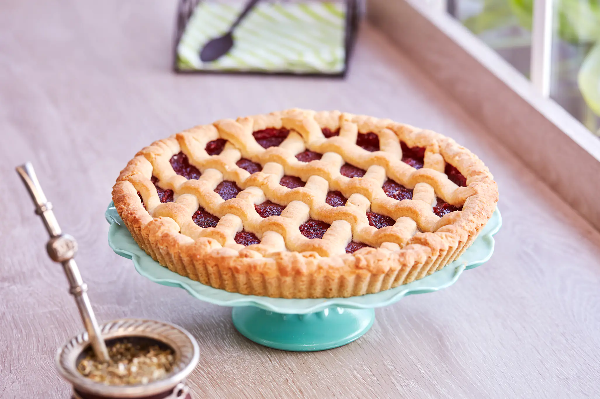

Chocotorta clásica argentina
La chocotorta es el postre sin horno más famoso y querido de 🇦🇷 Argentina. Fácil, cremosa y absolutamente irresistible, combina dulce de leche y chocolate en capas que se funden en la heladera hasta lograr una textura perfecta. Es la reina de los cumpleaños, reuniones familiares y antojos de último momento.
- 400 g de dulce de leche (mejor si es repostero)
- 400 g de crema de leche o natilla
- 750 g de galletitas de chocolate
- Leche o café para remojar las galletitas
- 50 g de chocolate semi amargo (cobertura o de taza)
- 50 g de cacao en polvo
Batir el dulce de leche hasta que aclare levemente su color. Agregar la crema y seguir batiendo a velocidad baja hasta lograr punto “letra”, cuidando que no se corte. (Si se corta, incorporar un chorrito extra de crema y mezclar suavemente).
Remojar las galletitas en leche o café y formar una primera capa en la fuente. Cubrir con una capa de la mezcla de dulce de leche. Repetir el proceso hasta completar cuatro capas. Llevar a la heladera al menos 1 hora para que tome consistencia.
Antes de servir, espolvorear con cacao en polvo y rallar chocolate semi amargo por encima.

Alfajores de Maizena clásicos
Suaves, delicados y rellenos con abundante dulce de leche, los alfajores de maizena son uno de los dulces más emblemáticos de Argentina. Ideales para acompañar unos mates por la tarde o un café a la mañana, son rendidores, fáciles de hacer y absolutamente irresistibles.
- 200 g de harina
- 300 g de Maizena
- 1/2 cucharadita de bicarbonato de sodio
- 2 cucharaditas de polvo de hornear
- 200 g de manteca
- 150 g de azúcar
- 3 yemas
- 1 cucharada de esencia de vainilla
- 1 cucharadita de ralladura de limón
- Dulce de leche (cantidad necesaria)
- Coco rallado (cantidad necesaria)
Tamizar la maizena, la harina, el bicarbonato y el polvo de hornear. Reservar.Batir la manteca con el azúcar hasta lograr una crema. Agregar las yemas de a una, integrando bien después de cada incorporación. Añadir de a poco los ingredientes secos tamizados. Incorporar la esencia de vainilla y la ralladura de limón. Mezclar hasta formar una masa homogénea, sin amasar.
Estirar la masa sobre una superficie enharinada hasta alcanzar aproximadamente ½ cm de espesor. Cortar círculos con un molde. Colocar las tapas en una placa limpia y hornear a temperatura moderada durante unos 15 minutos. No deben dorarse demasiado. Retirar y dejar enfriar.
Una vez frías, unir de a dos con abundante dulce de leche y pasar los bordes por coco rallado. Las tapas pueden guardarse en recipientes herméticos para conservarlas secas hasta el momento de armarlos.

Pastelitos
Los pastelitos criollos son una de las recetas más tradicionales de la cocina argentina. Crocantes y hojaldrados por fuera, con un corazón dulce de membrillo o batata, representan nuestras fechas patrias, las meriendas en familia y el aroma irresistible de algo recién frito. Un clásico que nunca pasa de moda.
- 500 g de harina 0000
- 100 g de manteca
- 250 cc de agua
- 1 pizca de sal
- 1/2 cucharadita de jugo de limón
- Manteca o margarina (para hojaldrar)
- Almidón de maíz (para hojaldrar)
- 125 g de dulce de membrillo
- 125 g de dulce de batata
- Aceite para freír
- Almíbar (opcional, para pincelar)
Comenzar arenando la harina con la manteca hasta formar una textura similar a migas. Incorporar el agua de a poco junto con la sal y el jugo de limón, integrando sin amasar. Envolver la masa y dejar descansar en la heladera durante 30 minutos.
Luego, estirar la masa sobre la mesada, pintarla con manteca derretida y espolvorear con almidón de maíz. Doblarla en tres como un libro, volver a estirar y repetir el proceso una vez más para lograr el efecto hojaldrado. Finalmente, estirar de espesor medio y cortar cuadrados de aproximadamente 5 cm.
Colocar un cubo de dulce en el centro de un cuadrado, humedecer los bordes con agua y cubrir con otro cuadrado colocado en diagonal. Cerrar pellizcando las esquinas. Freír primero en aceite a temperatura media (140°) durante unos minutos para que el hojaldre se abra. Luego aumentar la temperatura (180–200°) hasta que estén bien dorados. Retirar, escurrir y pincelar con almíbar si se desea.

Pasta Frola Clásica
La pasta frola es uno de los postres más tradicionales de la cocina argentina. Con su base suave y mantecosa, el relleno dulce de membrillo o batata y su clásico enrejado dorado, es sinónimo de merienda casera, mate compartido y recetas que pasan de generación en generación. Simple, rendidora y siempre irresistible.
- 1 huevo
- 1 yema
- 400 g de harina leudante
- 200 g de azúcar
- 200 g de manteca
- 1 cucharada de esencia de vainilla
- 1 cucharadita de sal
- Ralladura de 1 limón
- 200 g de dulce de membrillo
- 200 g de dulce de batata
- Agua cantidad necesaria
Batir la manteca pomada con el azúcar hasta obtener una crema clara. Agregar el huevo, la yema, la esencia de vainilla y la ralladura de limón, mezclando hasta integrar. Incorporar la harina leudante y la sal, uniendo la masa sin amasar, solo integrando suavemente. Envolver en film y llevar a la heladera durante 30 minutos.
Para el relleno, cortar el dulce en cubos, colocarlo en un recipiente con una cucharada de agua y calentar en microondas durante un minuto. Pisarlo hasta lograr una pasta uniforme, agregando un poco más de agua si es necesario. Precalentar el horno a 180 °C. Forrar un molde con la masa fría presionando con las manos o estirándola previamente. Cubrir con el relleno de manera uniforme.
Con el resto de la masa, formar tiras y colocarlas en forma de enrejado sobre el relleno. Hornear durante 30 a 35 minutos hasta que esté dorada. Dejar enfriar antes de desmoldar.
